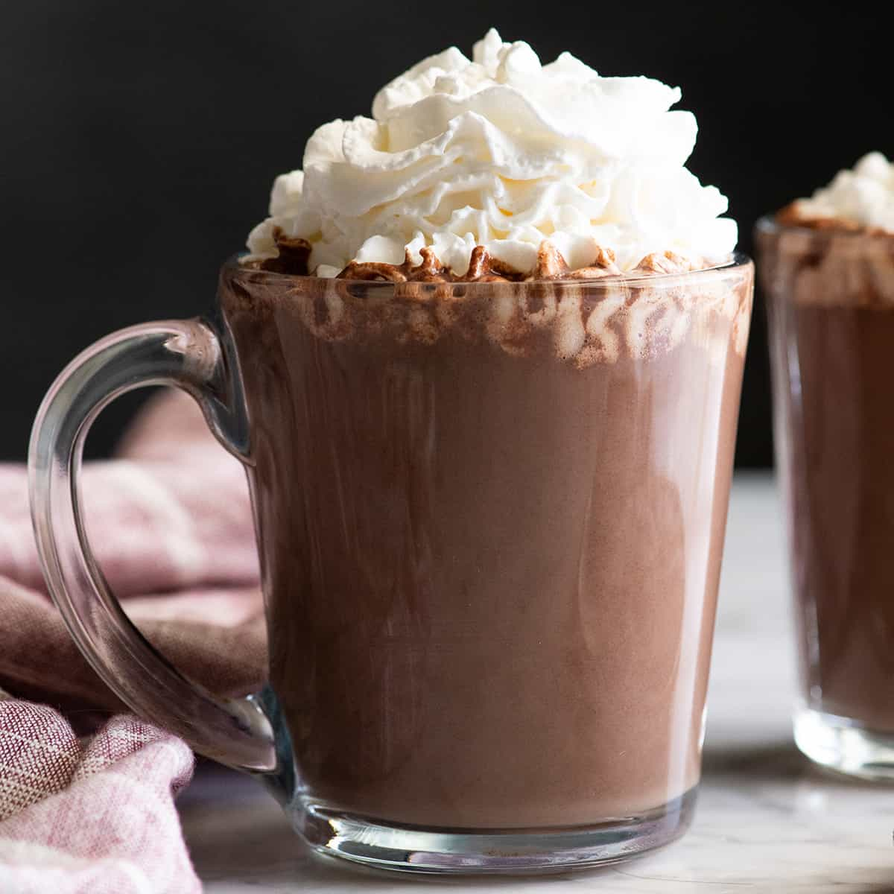

Homemade Hot Chocolate

Description
Say hello to the most delicious hot chocolate recipe - seriously, it's the best.
This hot cocoa is rich, creamy and so intensely chocolatey it will make you say
"goodbye" to powdered mixes once and for all.
Ingredients
- 2 ½ cups whole milk
- ¼ cup granulated sugar
- 2 tbsp unsweetened cocoa powder
- 6 oz bittersweet chocolate (or semisweet, milk, etc.)
- 1 stp pure vanilla extract
- homemade whipped cream or store-bought for serving
Steps
- Add milk, sugar and cocoa powder to a medium saucepan.
- Heat over medium heat, whisking occasionally, until the mixture just begins to
bubble but does not boil.
- Add chocolate and vanilla and whisk until the chocolate is melted and the mixture
is smooth.
- Pour into 4 small mugs and serve with whipped cream, homemade or store-bought.